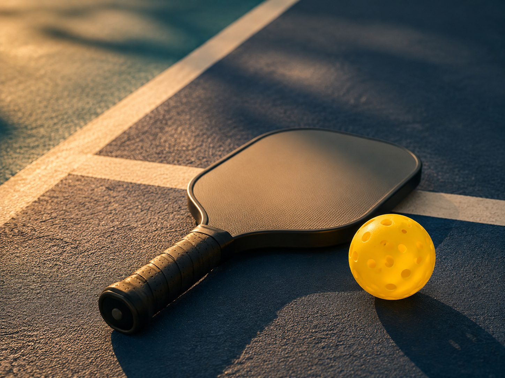
01 — Pickleball
匹克球運動推廣
全世界成長最快的球類運動，二〇二六年亞洲菁英匹克球聯盟（AEPL）創始賽季正式在台灣開打。 球拍輕、場地小、規則三分鐘就會——八歲跟八十歲可以站在同一個場上對打。 對我們來說，這是最沒有門檻的社交，也是最誠實的社交：球場上騙不了人。 我們把球場當成第二個例會場地。
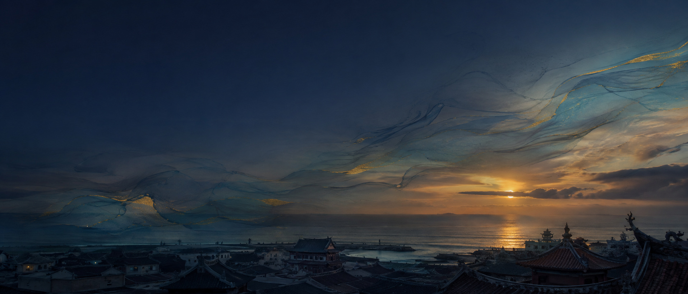
從第一次餐敘到第二次籌備會，我們花了十九個月，只為了確定：留下來的人，是真的想留下來。
— 創社社長 余宗豊 CP Johnny ／ 2026.08.16 第二次籌備會
目前留下來的準社友，全都是願意承擔、目標一致的革命戰友。籌備會仍在進行「創社重訓」， 持續優化社內結構——立基於商業、經濟、公益三者互為支點的創社理念， 鎖定年底修成正果，完成授證慶典。
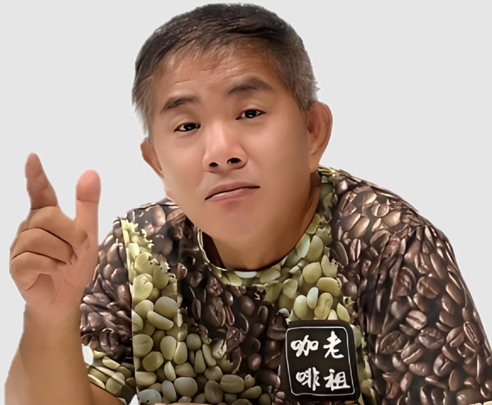
余宗豊 · CP JohnnyD3470
臺南匹克藝術扶輪社 創社社長 ／ 職業別：進出口貿易
他做了三十年進出口貿易，公司叫常富貿易，一九九六年在台南東區裕農路開張， 至今沒搬過家。他自己烘咖啡，品牌取名「老祖咖啡」—— 一個做外銷的人，把最在意的東西留在了巷子裡。
二〇一六年春天，他在台南辦了一場叫「Like 聚餐」的飯局，四十幾個人。 那頓飯後來變成一個持續十年的社群，再變成 ABC 企業交流協會， 再變成疫情最緊的那年，一車一車送進醫院的物資。 他形容自己做的事很簡單：「把人跟人連起來，剩下的自然會發生。」
他策了一檔畫展，取名《不像畫展》；他在展覽裡給自己排了一場座談， 講題叫 《藝術職業被害人》。 — 2025 年 12 月 20 日，不像畫展藝術座談會 場次二
一個願意把自己講成「被害人」的策展人，你大概猜得到他有多好聊。 但玩笑收起來以後，他講的話是這樣的： 「目前留下來的準社友，全都是願意承擔、目標一致的革命戰友。」 十九個月的籌備，走掉的人比留下的多，他沒有為了衝人數而放低標準。
所以這個社的三大核心，聽起來一點都不像一般的扶輪社—— 匹克球、美學藝術、海洋 ESG。 這不是為了標新立異，而是他相信： 公益如果不好玩，就走不遠；社團如果沒有共同的興趣，就只剩下捐款收據。

全世界成長最快的球類運動，二〇二六年亞洲菁英匹克球聯盟（AEPL）創始賽季正式在台灣開打。 球拍輕、場地小、規則三分鐘就會——八歲跟八十歲可以站在同一個場上對打。 對我們來說，這是最沒有門檻的社交，也是最誠實的社交：球場上騙不了人。 我們把球場當成第二個例會場地。
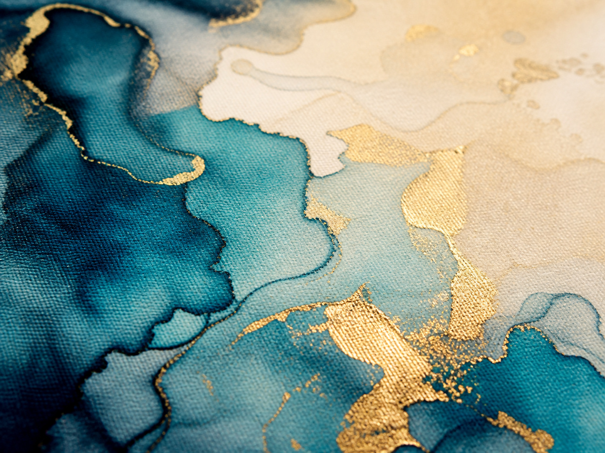
從《不像畫展—藝術企業家公益聯展》開始。六位藝術家、兩場座談、一場拍賣， 把展場搬進原木傢俱空間，讓藝術品跟生活對話。 我們相信「藝術生活化、生活藝術化」—— 當一幅畫可以被帶回家，同時也完成了一次善舉，藝術就不再只是掛在牆上的東西。
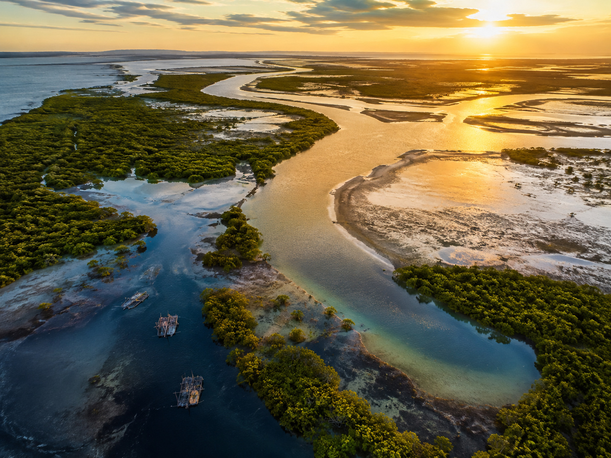
台南是一座靠海的城市，我們的祖先從這片海上岸。 海洋教育、淨灘行動、濱海濕地保育、永續消費—— 環境保護是國際扶輪七大焦點領域中最新、也最急的一項。 我們不打算只在世界海洋日發一篇貼文。
以下皆為公開報導可查的紀錄。沒有華麗的數字，只有一件一件做完的事。
從四十幾人的餐會開始，把台南的中小企業主、職人、創作者慢慢連成一張網。後來的每一場公益行動，幾乎都是從這張網裡長出來的。
把商業交流會變成一個會做事的組織：不等立案完成，先走進社區。「社區風格環境是我們最好的老師。」
疫情最吃緊的時候，ABC 企業交流協會八月愛心捐贈列車開進郭綜合醫院。除了老祖咖啡，還號召了森活汗蒸、棠風國際、詠安健康膳食等夥伴一起加入。
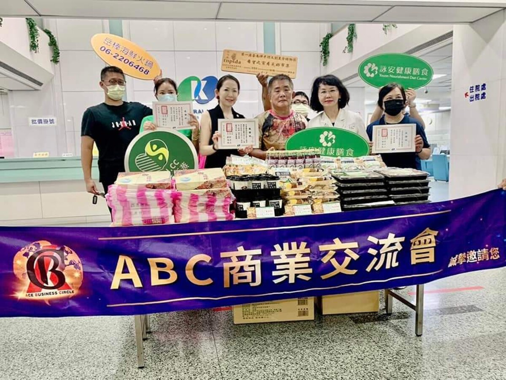
把義診、推拿、健康講座、熱食與飲品一次帶進社區活動中心。協會還沒正式立案，服務先做了。「不畏懼困難與瓶頸，挑戰百變環境，甚至無條件愛上她。」
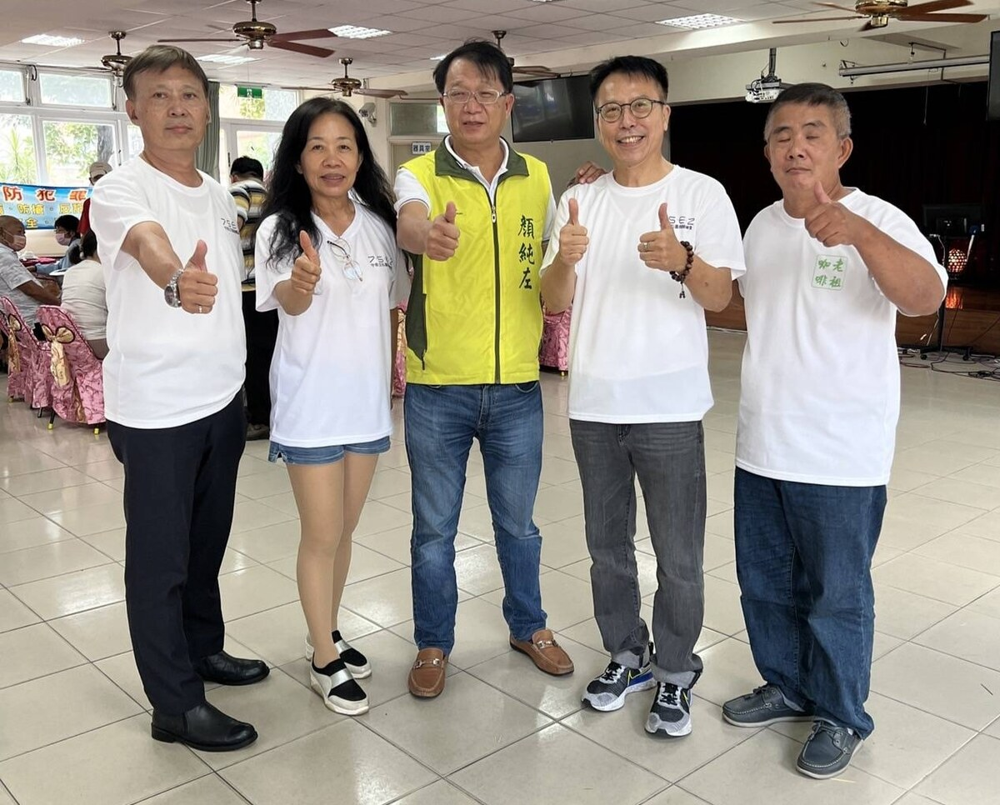
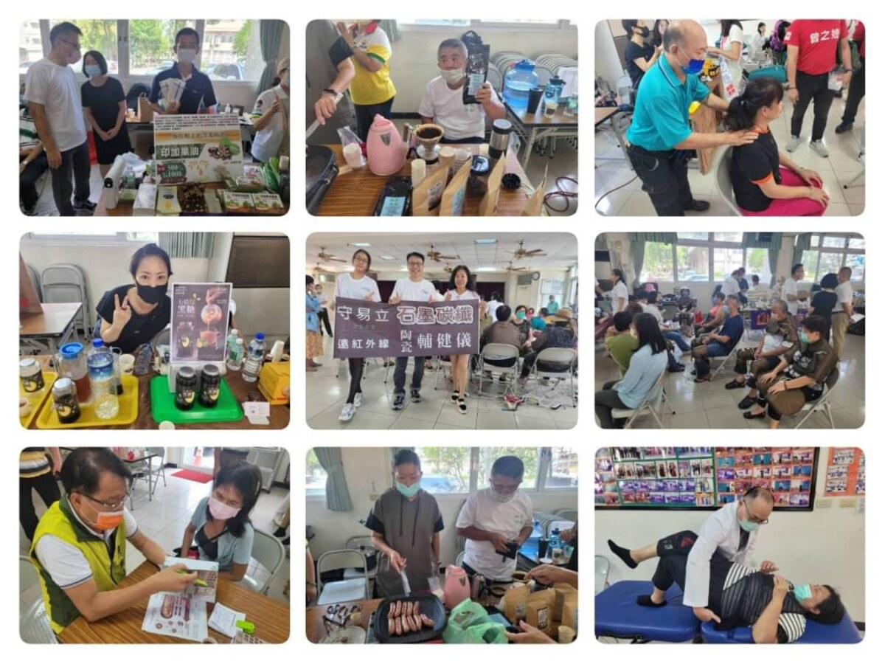
他既是王邑熏老師的學員、也是參展創作者，同時提供了現場的老祖咖啡。展期一個月，義賣所得全數捐出。他的素描作品畫的是自己種的那片菜田。
時任社長，首次帶隊參與完全配合扶輪中央的服務計畫。地區總監專車自雲林南下，指導半小時後又趕回去跑行程——那半小時，他記到現在。
由 KASHIWA 日本進口原木傢俱主辦、臺南匹克藝術扶輪社籌備會協辦，攜手國際藝術家張嘉苓博士等六位藝術家與傢俱藝術家陸大勇。展期近兩個月，含兩場藝術座談與一場公益拍賣。台南市安平區建平路 717 號。
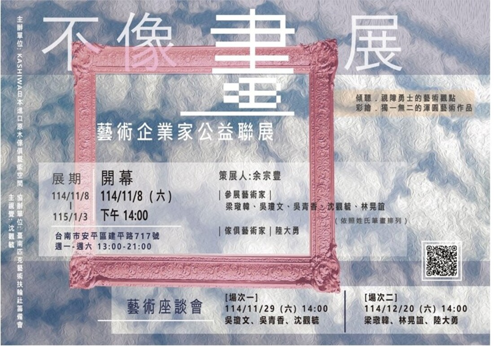
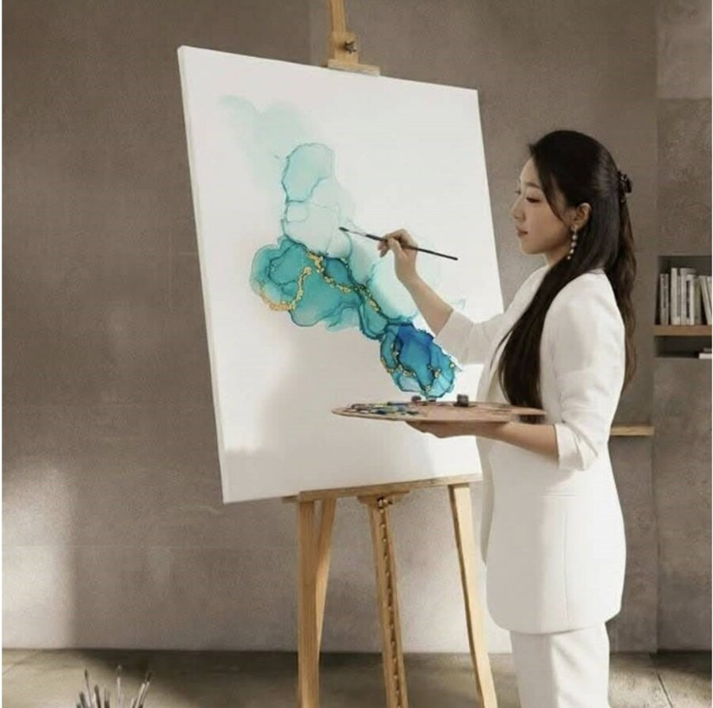
七、八月最忙的盛夏，總監團仍撥冗到場為新社注入強心針。第一次籌備會由當時的總監當選人作東，第二次由創社社長設宴回禮——扶輪大家庭的世代傳承，就藏在這一來一往裡。
為地區扶輪增添一股最溫暖、最具藝術與運動活力、也最靠近海洋的社會服務力量。
——這一頁，還留白。等你來寫。
一九〇五年二月二十三日，芝加哥。年輕律師保羅‧哈里斯（Paul P. Harris） 在一座陌生的大城市裡覺得孤單，於是找了三位不同行業的朋友聚餐—— 一位煤商、一位礦業工程師、一位裁縫。他們約定每週輪流在彼此的辦公室聚會， 「輪流」（rotary）這個名字就這樣定了下來。
一百二十年後，扶輪成為全球逾四萬六千個扶輪社、約一百二十萬名社員的網絡， 遍布兩百多個國家與地區。它做過最有名的一件事，是從一九八五年開始推動根除小兒麻痺： 全球病例至今減少 99.9%。
四大考驗 The Four-Way Test · 1932
這是扶輪社員在思想、言論、行為之前，用來檢驗自己的四個問題。九十多年來一字未改。
是否一切
屬於真實？
是否各方
得到公平？
能否促進
親善友誼？
能否兼顧
彼此利益？
五大服務 Five Avenues of Service
七大焦點領域 Areas of Focus
2026–27 年度
Create Lasting Impact
創造持恆的影響
國際扶輪 2026–27 年度社長 Olayinka H. Babalola（奈及利亞 Trans Amadi 扶輪社）提出的年度主題。
他說：「我們常常談論改變世界，卻很少想過扶輪是怎麼改變我們的。」
改變只是開始，影響才是持久的。
3470 地區 2026–27 年度總監：林正超 DG Datum（嘉義阿里山扶輪社）
扶輪的職業分類制度，讓每位社友代表不同行業。你不會在社裡遇到同業競爭，只會遇到你平常接觸不到的專業。這是最古老、也仍然最有效的跨界設計。
從需求評估、計畫書、經費、執行到成果報告，扶輪有一整套百年累積的服務方法論，還有地區與國際基金會的資源可以申請。你的善意會被放大，而不是被消耗。
兩百多個國家、四萬六千多個社。出差到任何一座城市，你都可以去當地扶輪社例會報到。姊妹社締結、國際服務計畫、青少年交換——世界比你想的容易走進去。
我們把匹克球放進社名裡是認真的。生意場上的關係常常斷在利益，球場上的關係不會。一起流過汗的人，比一起吃過飯的人可靠。
匹克球全齡都能打，藝術展全家都能看，淨灘小孩最投入。扶輪從來不是把人從家庭裡拉走的社團——我們希望你的另一半和孩子，也認得社裡的每一張臉。
十九個月的磨合，留下來的都是把「答應了就會做完」當基本盤的人。這是新社最珍貴的資產，也是我們唯一不打折的入社標準。
創社社友（Charter Member）的名字，會永遠留在這個社的第一頁。 如果你在台南，做著一份你願意講三小時的工作， 而且不排斥週末被拉去打球、看展、撿垃圾—— 直接打給社長，他接電話很快。
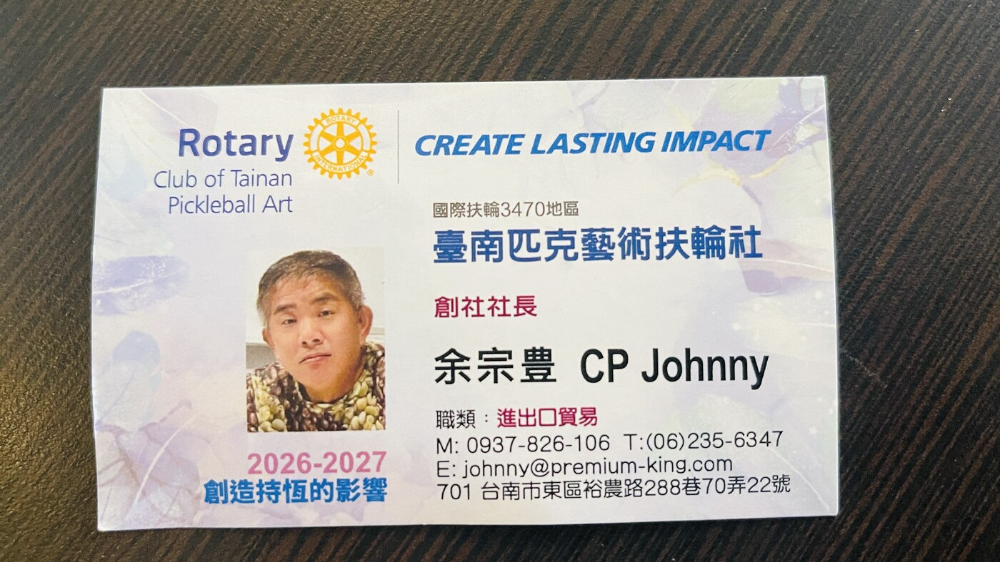
填完按送出，會用你電腦或手機裡的郵件程式，把這份表單直接寄給社長本人—— 中間沒有秘書、沒有客服信箱、沒有機器人。他通常當天回。 看完信如果覺得不合適，他也會直說，這比拖三個月有禮貌。